Module 2 Activity Research
Weekly Activity
Yiyang Zhang
Project 2
Module 2 — Context-Aware Outfit Advisor
This project builds a context-aware outfit advisor. It reads local weather (temperature, humidity, wind, precipitation) and maps simple rules into daily clothing tips. Output combines a servo pointer gauge and LCD text. We start with fast cardboard prototypes and progress to a sensor + microcontroller build for real-world testing.
In-Class Activity 1 Geurrilla Prototyping I


References (video tutorials that informed each step)
- Tutorial #1 (basis for Images 1–2): https://www.youtube.com/watch?v=eFnLHOCWO3o
- Tutorial #2 (optimizations for Images 3–4): https://www.youtube.com/watch?v=3LgJ7QjEKZs
- Tutorial #3 (additional ideas for Image 5): https://www.youtube.com/watch?v=PvNSH1UmjEk
Notes: alt texts describe the action --> problem and benefit --> takeaway.
In-Class Activity 2 — Guerrilla Prototyping II


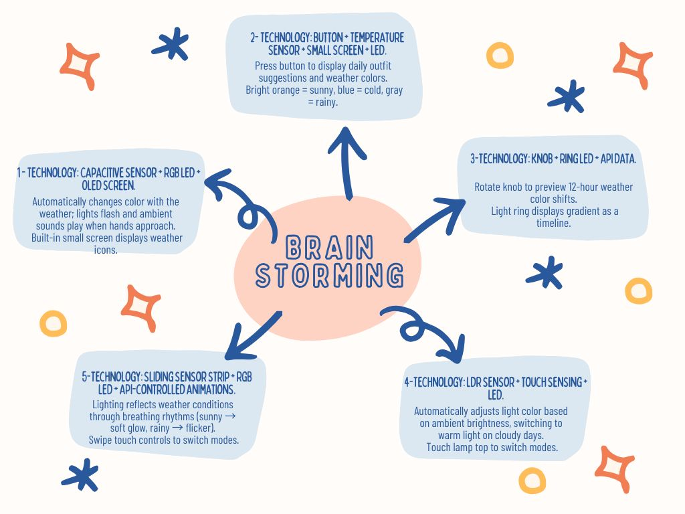
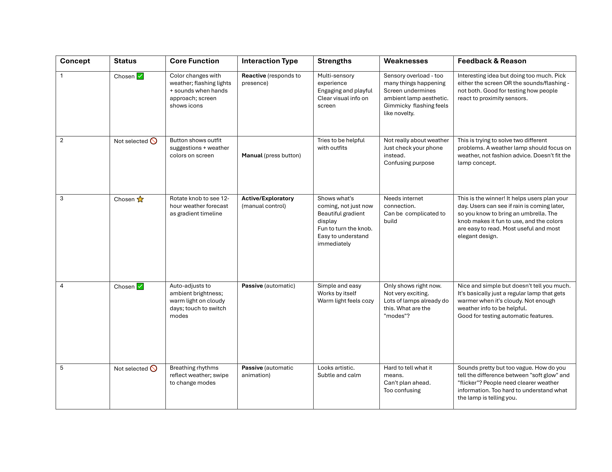
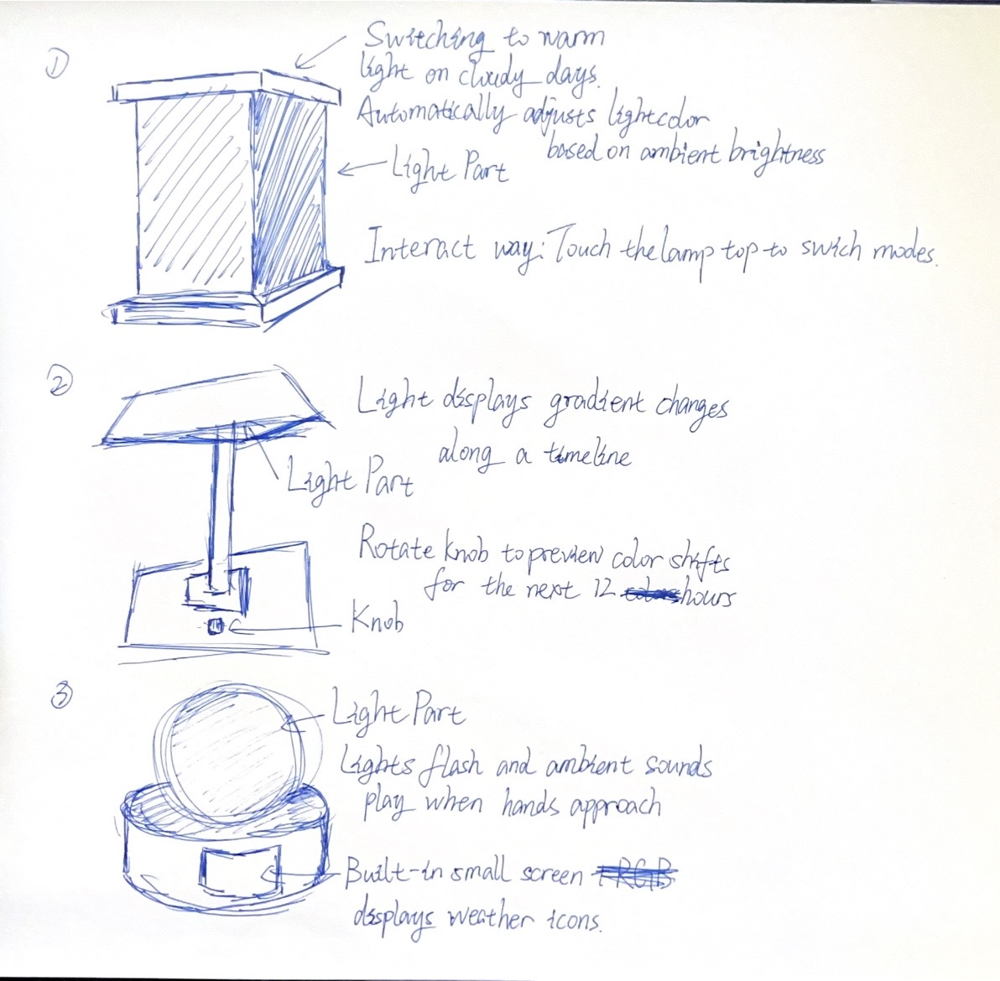
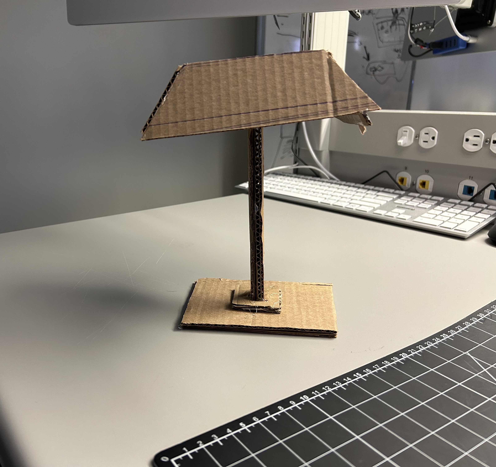
Activity 1 — DHT11 Sensor Exploration & Testing


Activity 2: Iterating on DHT11 Data to LED Signals
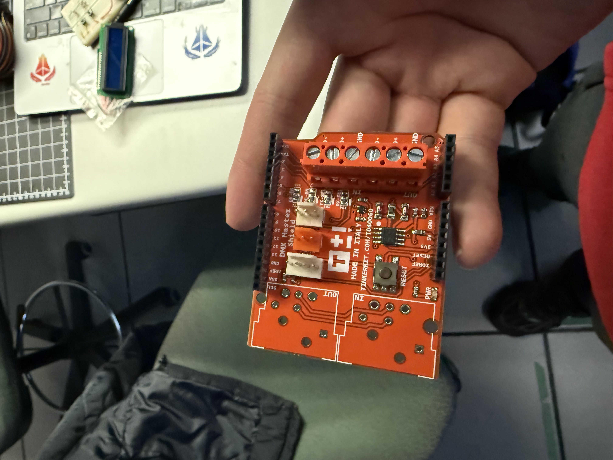

 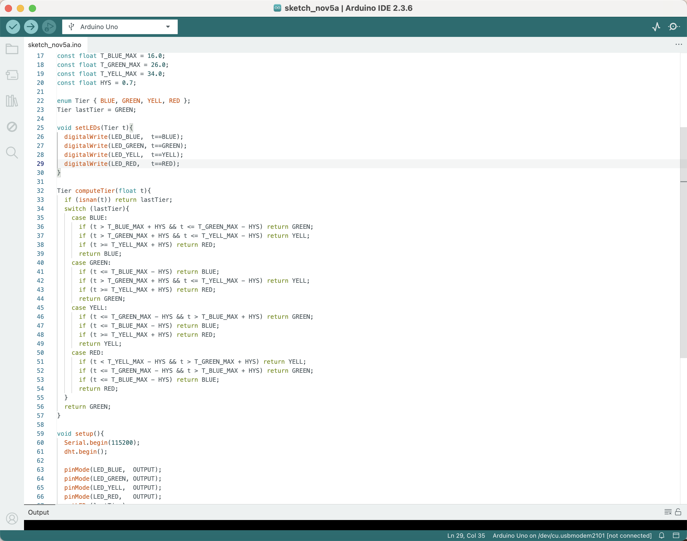
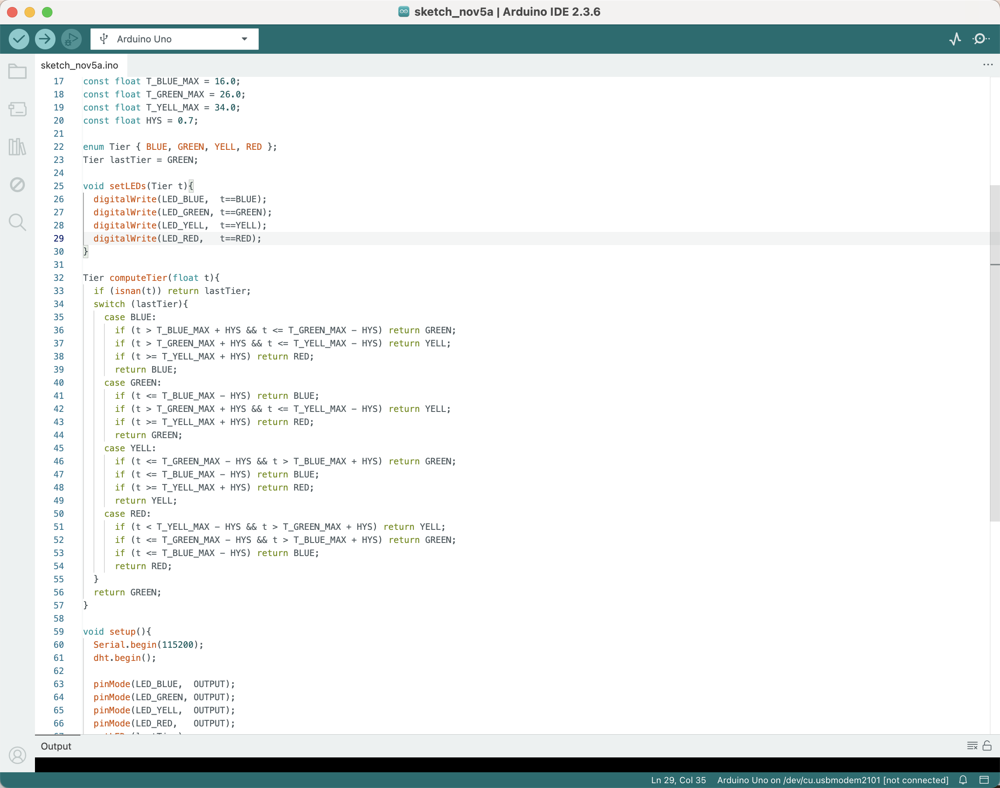

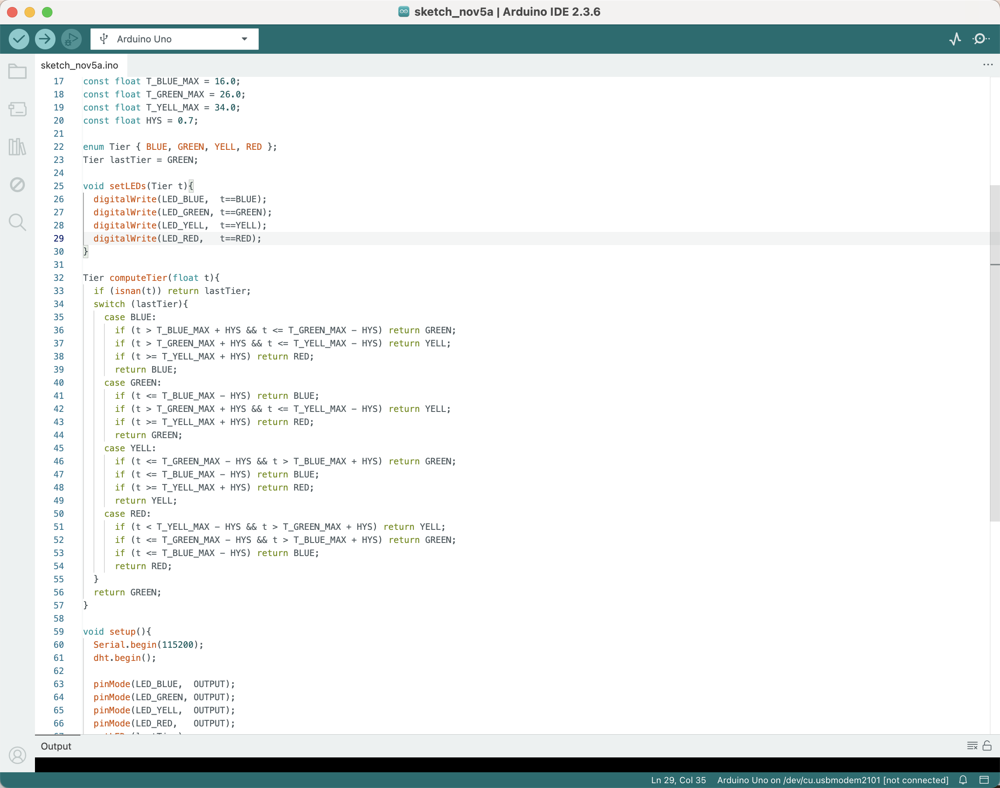
Action Research — Activity 3: Iterating DHT11 Data → LED Cues → LCD1602 Display
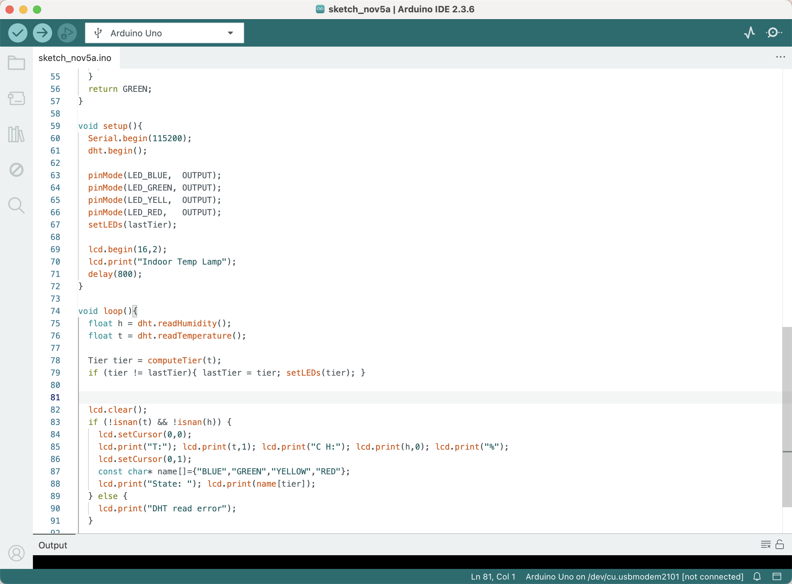
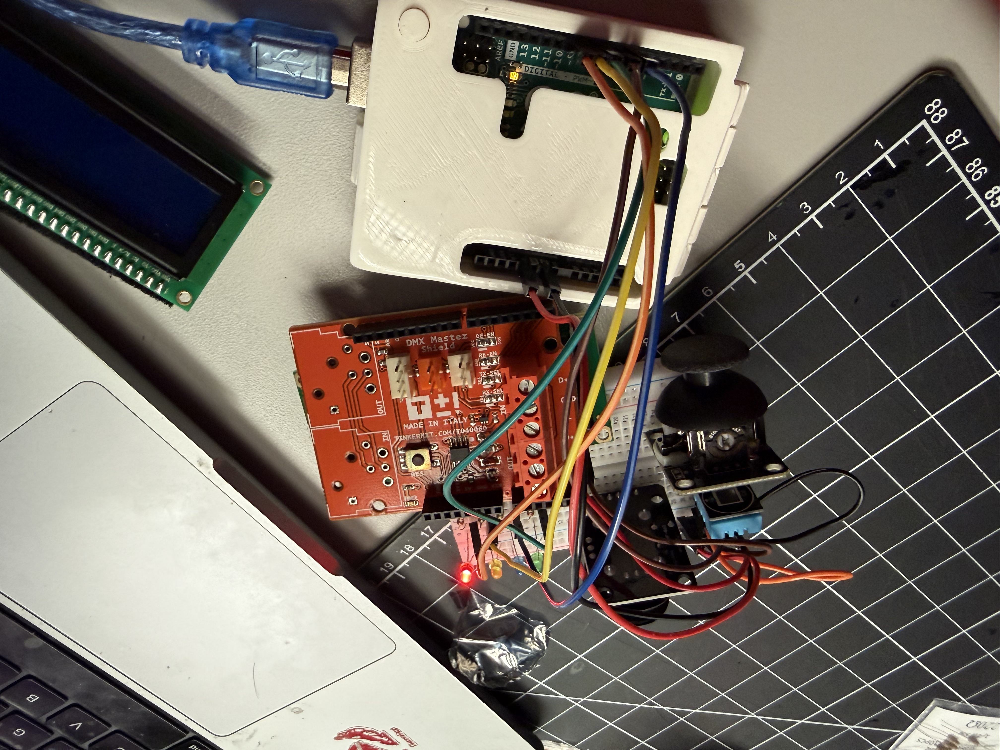
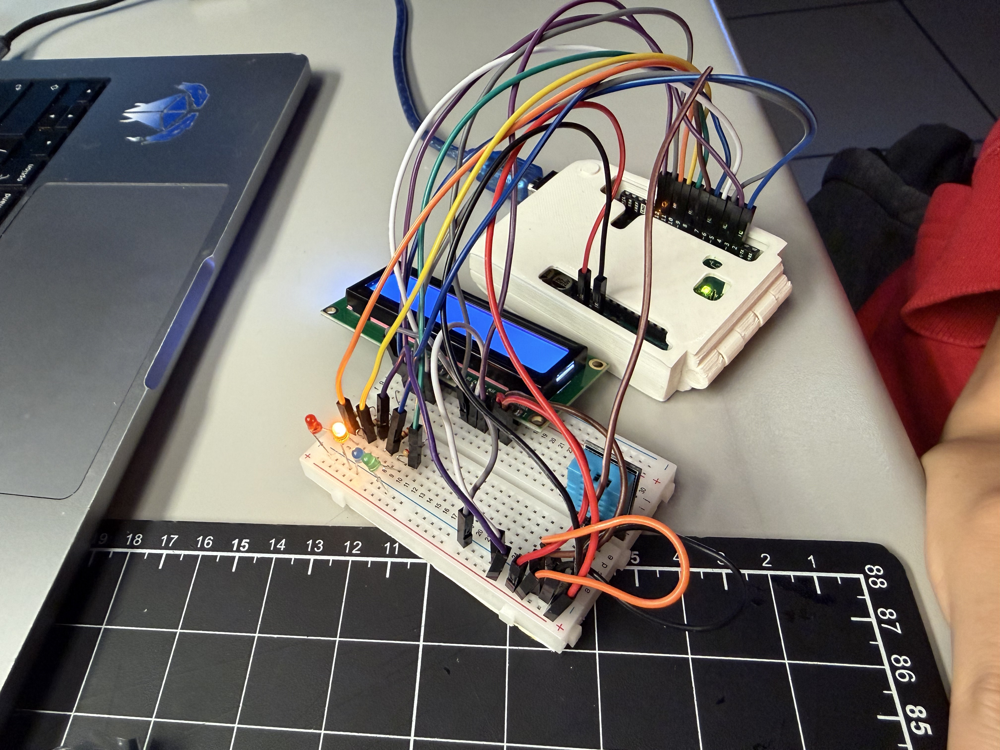
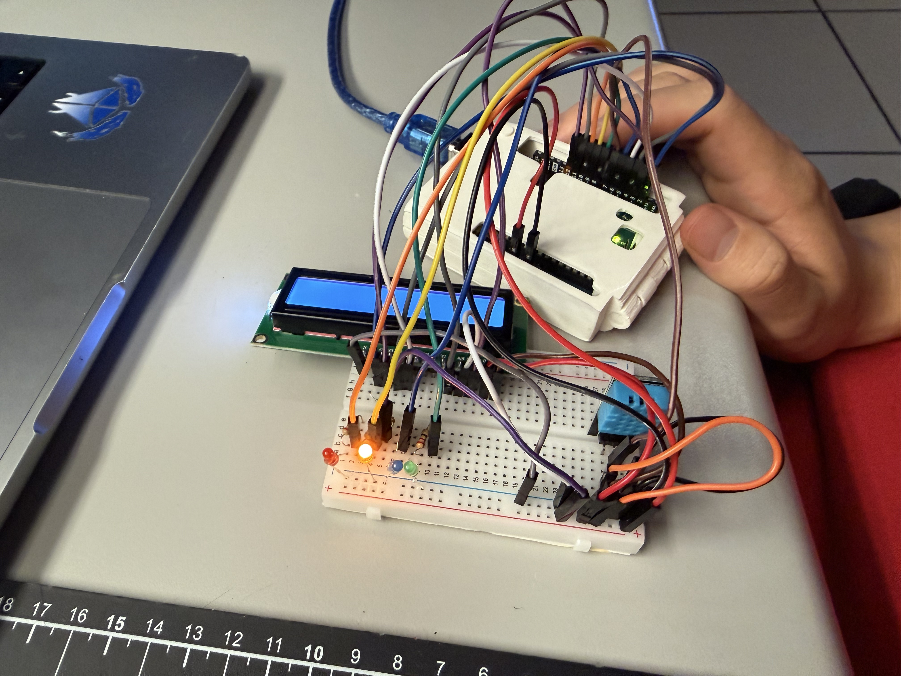
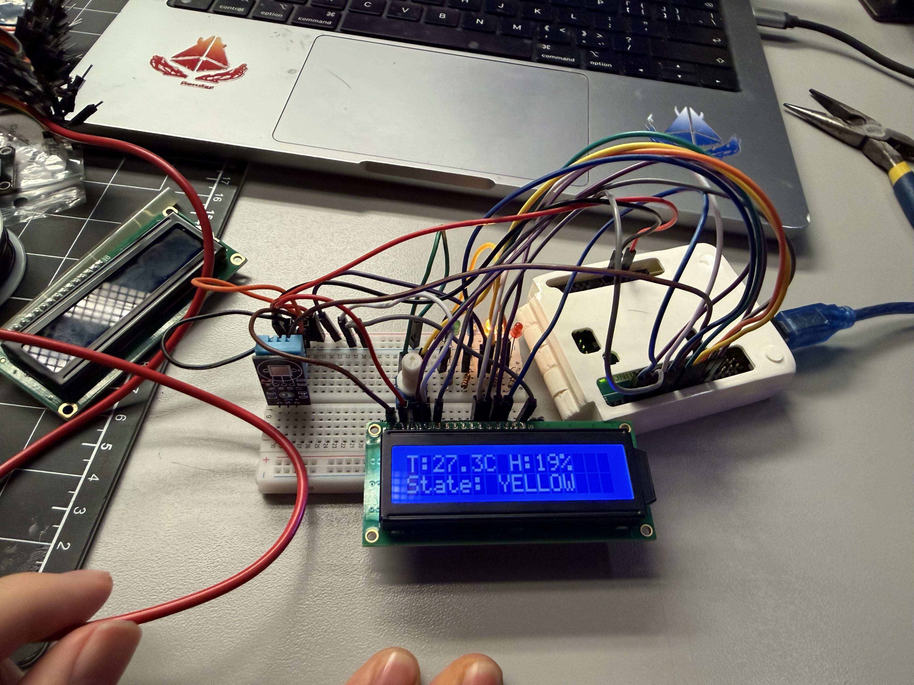
Project 2
Project 2 Prototype — Comfort Lamp (Arduino + DHT + LCD)
I built a temperature–humidity “comfort lamp” that reads a DHT sensor and maps the result to four tiers with hysteresis (BLUE < 16°C, GREEN 16–26°C, YELLOW 27–34°C, RED ≥ 35°C). The LCD shows live T/H and the current state, while the RGB status light gives immediate ambient feedback. The system already streams clean serial messages for a ProtoPie bridge, so the next step is removing the LCD and shifting UI + audio to ProtoPie, plus adding a mode button, a pattern button, and a brightness/speed knob to increase physical interaction based on peer feedback.

Powered by w3.css